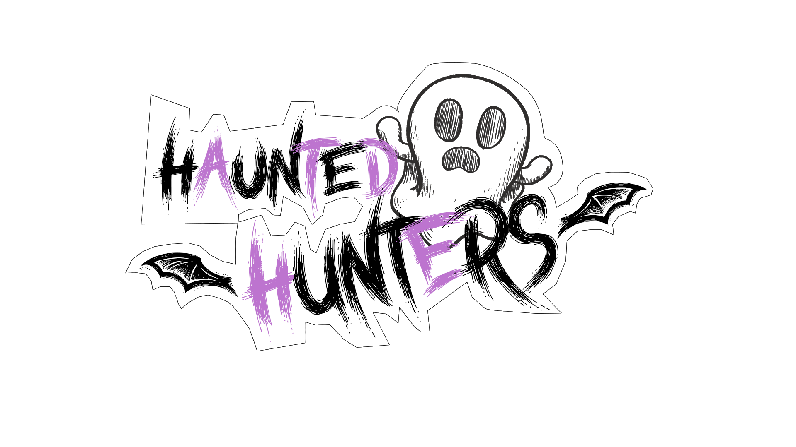
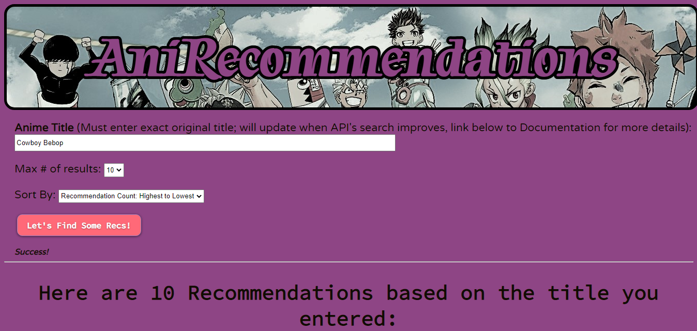
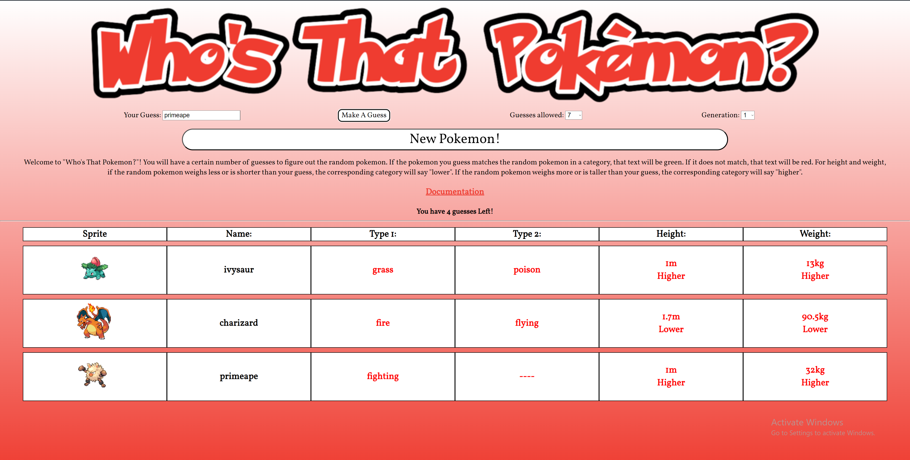
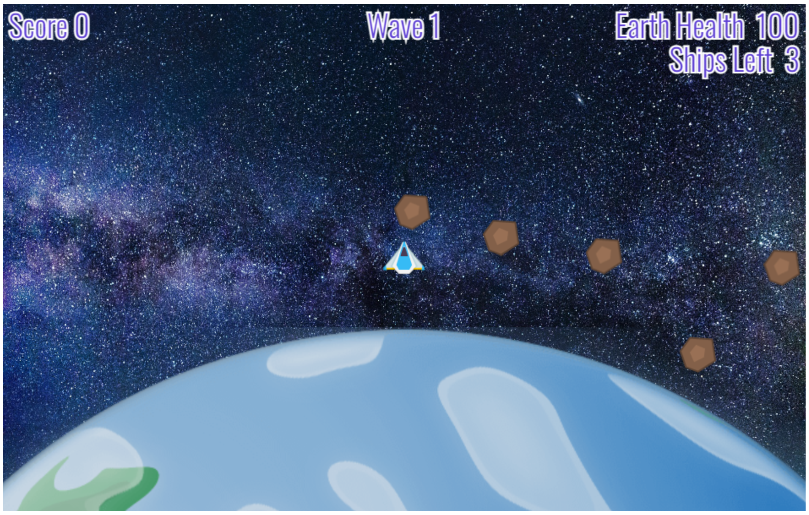

PROJECTS
Haunted Hunters

Working in a team of 3 developers to create an endless runner game where the player must travel as
far as they can through an endless haunted mansion while attacking ghosts and avoiding furniture
as the game progressively speeds up.
My Contributions:
- Implemented the initial obstacle spawning system
- Implemented the player attack mechanism and the energy bar for the player
Skills Used: Unity, C#
AniRecommendations

Built a web application using the Jikan API to give a user a list of recommended anime series based
on the user-inputted series. Web app includes functionality to sort results alphabetically, (A-Z &
Z-A) or by the number of users who recommend a series.
Skills Used: HTML, CSS, JavaScript
Who's That Pokemon? Refactored

Link to the original project from my IGME 235 Intro to Game Web Tech Class: Who's That Pokemon? Original
Built a web application using the RESTful Pokémon API to create a Wordle-like experience, where the
user has to guess a mystery pokemon within a certain amount of tries, receiving comparative info
based on the pokemon they guess.
Skills Used: HTML, CSS, JavaScript
Protect The Planet

Built a web game where the player controls a spaceship and must defend the earth against ever
increasing waves of asteroids. There is also a shop between each wave where the player can increase
stats using points earned in each wave.
Skills Used: HTML, CSS, JavaScript